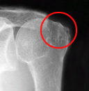

肩腱板断裂
肩腱板断裂とは
肩腱板断裂とは、肩関節を安定させ動かす役割をもつ腱板が、転倒して手をついたり肩を強打した際に切れたり、部分的に傷ついた状態を指します。
また、高齢になると自然に腱板が切れて肩が痛みがでることもあります。

症状
肩を動かしたときの痛み
腕が上がりにくい、力が入らない
夜間痛（寝ているときの痛み）
原因
腱板は、肩甲骨と上腕骨をつなぎ、上腕骨を包む板状の4つ（肩甲下筋、棘上筋、棘下筋、小円筋）の腱の総称で、肩関節を安定させ、動かすために重要な役割を担っています。
腱板断裂には、肩峰と上腕骨にはさまれているという解剖学的構造が大きく影響し、腱板の消耗（繰り返し動作）と腱板の変性加齢、最終的に外傷が加わって断裂（棘上筋断裂が多い）にいたります。
若年者では、繰り返し動作（仕事、スポーツなど）、外傷（転倒など）で発生することが多く、50歳以降では、腱板の変性加齢により、日常生活でも自然に断裂が生じることもあります。
断裂型には、完全断裂と不全断裂（滑液包面断裂）があり、スポーツによる投球障害では不全断裂を起こしていることが多いです。
診断
診察、X線（レントゲン）、超音波エコー、MRIを行います。
X線（レントゲン）所見では、肩峰や上腕骨の変形や、肩峰と骨頭間距離などにより評価をします。
超音波エコーでは、エコーの届く範囲での断裂部の確認、動作の中で腱板の評価が可能です。
MRIでは深部までの評価が可能で、腱板の断裂、筋萎縮（脂肪変性）の所見がみられます。
またMRIでは、腱板断裂以外（腫瘍、ガングリオンなど）の疾患も確認することが可能です。
治療
急性期には三角巾などで1～2週安静にします。
一定期間の安静の後、保存療法（注射療法とリハビリテーション）を行います。
注射療法では、肩関節周囲炎を併発した際に、疼痛が強い時にステロイド注射を肩峰下滑液包に行い、夜間痛が改善後にヒアルロン酸注射に切り替えます。
完全断裂でなければ、残っている腱板機能を回復させるリハビリテーションが有効です。
半年～1年程度の保存療法で肩関節痛と運動障害が治らないときは、手術療法が行われます。
手術には、関節鏡視下手術と直視下（オープン）手術があり、関節鏡視下手術が普及してきています。
1～2週間の入院、手術後は約4週間の固定と3か月程度のリハビリテーションが必要です。